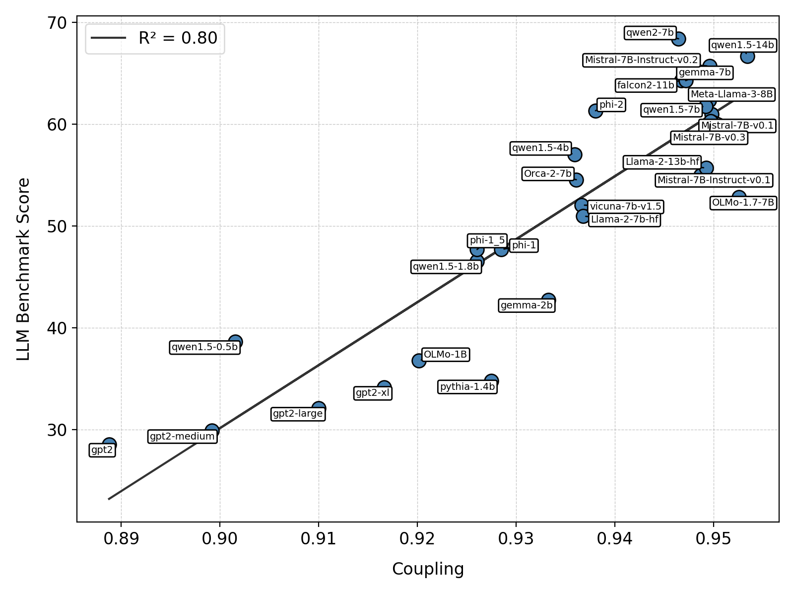

*Equal contribution
We trace the trajectories of individual tokens as they pass through LLM layers
and linearize the transformer blocks through their Jacobian matrices.
By examining the relationships between these Jacobians, we uncover the transformer block coupling
phenomenon in a variety of LLMs, characterized by the coupling of their top singular vectors across
tokens and depth. Our findings reveal that coupling positively correlates with model performance,
and that this relationship is stronger than with other hyperparameters, namely parameter budget,
model depth, and embedding dimension.
 Fig. 1: Coupling correlation with HuggingFace LLM Leaderboard